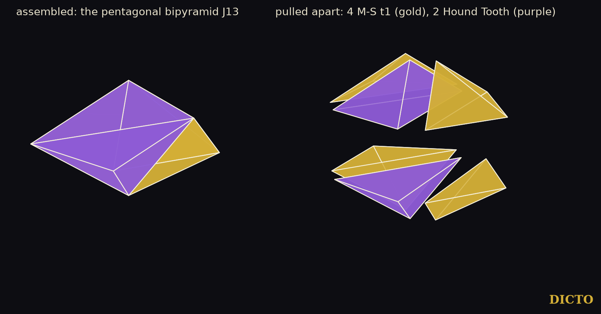

A New Law of Aristotle's Pyramids: the five pyramids keep to their solids
Aristotle wrote that the pyramid fills space. Cut the five Platonic solids from their centres and five pyramids appear, the natural ones to try. Here they must meet whole face to whole face, as stones do in a wall.
Paper #44 settled the loose case: a set of face pyramids fills space, touching in any way, exactly when it is the cube's alone, the tetrahedron's with the octahedron's, or these three together. Aristotle's pyramids are therefore the cores of the regular solids, and, as Part III of the book shows, of the four-dimensional ones. DICTO proposed two further lines: which of the five pyramids can share a network when every contact is a whole face, and which new deltahedra, solids with only equilateral triangles as faces, his own pieces make when glued together. Chapter 3 of the book Alicia in Wonderland stated the first answer and searched to five pieces. This paper gives the full face-to-face classification with a short proof (Section 3), carries the search to six pieces (Section 4), and identifies the one new result of that search with a known dissection.
With the edge of each solid 1, α = arccos(1/3) (the tetrahedron's dihedral angle), θD = arccos(−1/√5) and θI = arccos(−√5/3) (the dodecahedron's and the icosahedron's). The pyramids are C, T, O, D and I (the Cleo-Icos); exact values from the study of 27 October 2026 (sympy):
| Pyramid | Faces | Apex angle of a side face (cos) | Base-edge dihedral | Side-edge dihedral |
|---|---|---|---|---|
| Cube (C) | square 1; 4 isosceles (1, √3/2, √3/2) | 1/3 | π/4 = 45° | 120° |
| Tetrahedron (T) | equilateral 1; 3 isosceles (1, √6/4, √6/4) | −1/3 | α/2 = 35.26° | 120° |
| Octahedron (O) | equilateral 1; 3 right isosceles (1, √2/2, √2/2) | 0 | (π − α)/2 = 54.74° | 90° |
| Dodecahedron (D) | regular pentagon 1; 5 isosceles | √5/3 | θD/2 = 58.28° | 120° |
| Icosahedron (I, Cleo-Icos) | equilateral 1; 3 isosceles, side/base √((5+√5)/8) | 1/√5 | θI/2 = 69.09° | 72° |
Table 1. The five face pyramids. A side edge runs from the apex (the solid's centre) to a corner of the base; its dihedral angle is 2π divided by the number of faces at a corner of the solid.
Two different pyramids never share a side face, so round any side edge all the pieces are of one kind, and they close up into their whole solid. What is left is a question about whole solids, and the angles answer it.
Theorem 1. Let space be tiled face to face by copies of the five face pyramids, mirror images allowed. Then (a) the pyramids with a common apex form one whole Platonic solid, so the tiling is a face-to-face tiling by whole Platonic solids, each cut from its centre; (b) that tiling is either the cubic tiling, or a tiling by regular tetrahedra and octahedra in which every edge has two tetrahedra and two octahedra round it; (c) D and I occur in no such tiling, and two different pyramids meet only base to base: T with O in the tilings of (b), I with T or O only in finite clusters (bipyramids, Figure 1).
Proof. Faces. The side faces of different pyramids are never congruent: the cosines of their apex angles (Table 1) all differ, and no side face is equilateral. In each side face the apex is the corner between the two equal sides, so a congruence between side faces of one pyramid kind carries apex to apex and base edge to base edge. The square occurs only on C and the pentagon only on D; the equilateral bases of T, O and I match one another.
(a) Side edges. In a face-to-face tiling the tiles round an edge follow one another, each sharing a whole face with the next. Round a side edge of a pyramid P, the next tile shares a side face of P, so it is a pyramid of the same kind with the same apex, and the edge is again a side edge of it; going round, every tile at the edge is of P's kind with the same apex. The side-edge dihedral angles 120°, 120°, 90°, 120° and 72° divide 360° into 3, 3, 4, 3 and 5 parts: exactly the number of faces round a corner of the solid. So the pyramids at one apex, joined across their side faces, close up round every side edge, and together they are the whole solid. The tiling by pyramids is a tiling by whole solids, meeting face to face, since their faces are the pyramids' bases.
(b) Edges of the whole solids. A cube's square meets only another cube, so a tiling with a cube has only cubes (space is connected, and the tile next to a cube across any face is a cube); a face-to-face tiling by cubes is the cubic tiling. Likewise a dodecahedron meets only dodecahedra, and round an edge of a tiling by dodecahedra n θD = 2π, which is impossible because θD is not a rational multiple of π (#44, Lemma 2). In a tiling by tetrahedra, octahedra and icosahedra, the angles round an edge give nT α + nO (π − α) + nI θI = 2π. Since π, α and θI are linearly independent over the rationals (#44, Lemma 2, from the Splitting Theorem of Conway, Radin and Sadun), nI = 0, nT = nO, and then nO π = 2π: two tetrahedra and two octahedra round every edge.
(c) follows from (a), (b) and the face facts: the only face two different pyramids share is an equilateral base, so different pyramids meet base to base; in a tiling only T and O occur, and I meets T or O only in clusters that are not part of any tiling. ∎
The octet truss, Maurolico's tiling of tetrahedra and octahedra (Lagarias and Zong 2012), has two of each round every edge, so it and its tetrahedra and octahedra cut from their centres realise (b); so do the stackings of its layers, which keep the same edge condition. Theorem 1 does not depend on which other tetrahedron–octahedron tilings exist, and we do not classify them here.
Corollary 1. The Cleo-Icos lies in no face-to-face tiling by face pyramids. A network on the Cleo-Icos needs a partner that is not a face pyramid: Antonius, with which two Cleo-Icos fill the prolate golden rhombohedron (#20), or the connectors of #47, with which all five Platonic solids fill space together.
Comparison with the angle count alone. Before using the faces, the angles round an edge already leave 26 edge stars (combinations of side-edge and base-edge dihedral angles making 2π), 20 of them mixing pyramid kinds; for example two cube pyramids on their bases with one tetrahedron and one octahedron pyramid on theirs and two octahedron pyramids on their sides. The face facts above remove all 20 at once except the octet's: four tetrahedron and four octahedron pyramids, on their bases, round one edge. The list is in the study data (q1-pyramids.json).
If the pyramids will not make new networks, perhaps DICTO's own pieces, glued together, make new solids with only triangles on the outside.
Chapter 3 of Alicia in Wonderland glued seventeen pieces with at least one equilateral face, whole face to whole congruent face, in every way: all of them to four pieces, DICTO's pieces alone to five. It found 772 solids with equilateral faces, every one a regular solid cut up again or a face-gluing of regular tetrahedra, octahedra and icosahedra; none was new. Here the second search is carried to six pieces.
Pieces. 21 entries: the three face pyramids with an equilateral base (T, O and the Cleo-Icos); Antonius; the Admiral Cap; the six Mosseri–Sadoc tiles t1–t6, among them the Hound Tooth (t2), the Tricap (t3), CLEO (t4) and AXE (t6), each also at its second scale (factor φ or 1/φ) so that tiles meet on their (1, 1, φ) and (1, φ, φ) faces; and the Weirdstone and the Tadpole with their mirror images. The regular solids themselves and the half octahedron are left out.
Method. A piece is glued whole face to whole congruent face, mirror images allowed; clusters whose interiors meet are dropped (intersection volume, manifold3d); the same cluster reached twice is kept once (a labelled distance signature). A cluster is a result when its surface, merged into planar faces, is a closed surface of equilateral triangles of one size enclosing the pieces' total volume. The search is complete to two pieces; from the third piece on, each new piece covers a face of the cluster that is not equilateral, since such a face must be covered before the cluster can be a deltahedron, and a cluster with only equilateral faces left is tested but not grown. It ran on dicto-big-brother in 4,165 seconds with 12 processes.
| Pieces | 2 | 3 | 4 | 5 | 6 |
|---|---|---|---|---|---|
| Different clusters | 191 | 1,834 | 25,683 | 363,319 | 5,143,972 |
| Solids with equilateral faces (new at that size) | 0 | 0 | 1 | 0 | 2 |
Table 2. The six-piece search. The counts to five pieces repeat those of Chapter 3 exactly; the six-piece level is new.
Theorem 2 (search). Within the search of Table 2, DICTO's pieces make exactly two solids with equilateral faces: the regular tetrahedron, from four tetrahedron pyramids, and the pentagonal bipyramid J13, from four t1 and two Hound Tooth (t2), found at both scales of the tiles (edge 1 and edge 1/φ). The J13 is two pentagonal pyramids t1 + t2 + t1 put base to base.
Checks. The J13 found has 7 corners, 15 edges and 10 faces; its five equator corners lie in one plane (error 0) at distance 1/(2 sin 36°) from the axis, its apexes at height √((5 − √5)/10) above and below, every edge has length 1 to 2 × 10−16, and its volume is 0.603006, which is (5 + √5)/12, the volume of J13 with edge 1. Each of the six pieces lies on one side of the equator plane: one t1, the t2 and the other t1 above, their mirror images below. The Mosseri–Sadoc tiles have exact corners in ℚ(√5), so the identification is exact; the search itself, its overlap test and the sorting into distinct clusters are in floating point and are a screening.

Koca, Koc, Koca and Al-Siyabi (2020, p. 6) build the pentagonal pyramid as t1 + t2 + t1, as the projection of a 5-simplex, and use it to build the icosahedron from the tiles. Two of their pyramids on a common pentagon make the J13, so the six-piece result is a direct consequence of their dissection. No solid of the search uses Antonius, the Admiral Cap, the Tricap, CLEO, AXE, t5, the Weirdstone, the Tadpole, the octahedron's pyramid or the Cleo-Icos.

Kaleidohedra, DICTO → 3D+ → Aristotle's Pyramid (kaleidohedra.dictospheres.com/?open=aristotle) shows the five pyramids drawn apart from their solids, the cube's pyramids and the octet cut up, which are the two kinds of tiling of Theorem 1, and the golden fix with Antonius of Corollary 1.
New. Theorem 1 is new as far as the sources checked show: it is the complete classification of the face-to-face tilings of space by the five face pyramids, the case DICTO proposed after #44. Every such tiling is a tiling by whole Platonic solids cut from their centres, either the cubic tiling or a tetrahedron–octahedron tiling such as the octet; the dodecahedron's pyramid and the Cleo-Icos take part in none, and two different pyramids meet only base to base. Together with #44, which settled the case where pieces may touch in any way, this completes the answer to DICTO's reading of Aristotle for the face pyramids: loose or face to face, the only sets that fill space are the cube's pyramid, and the tetrahedron's with the octahedron's. Face to face the answer is sharper still: the pyramids can only rebuild their own solids.
New, and negative. The six-piece search, 5,143,972 different clusters of DICTO's pieces, gives a negative result: glued face to face, his pieces make no new deltahedron up to six pieces, only the tetrahedron and the pentagonal bipyramid. It is a screening, complete to two pieces and restricted beyond.
Known. The one solid the search added, the pentagonal bipyramid from four t1 and two Hound Tooth, is two pentagonal pyramids of Koca, Koc, Koca and Al-Siyabi (2020). The tools of the proof, the face pyramids, the octet and the angle independence, are classical or come from #44.
The new shapes DICTO was looking for lie elsewhere: where the Cleo-Icos finds its partners outside the family (Antonius, #20; the connectors of #47), and in the four-dimensional solids, whose cores are these same pyramids.
Sources checked (27 and 30 October 2026). Reference library (ask-library): the five queries of the study of 27 October ("non-convex deltahedra enumeration"; "deltahedron equilateral triangle faces polyhedra list"; "face-to-face gluing of regular tetrahedra octahedra icosahedra polyhedra"; "central pyramids of Platonic solids space filling"; "Mosseri Sadoc golden tetrahedra tiles"), with Johnson 1966; Sommerville 1922; Kramer 1982; Torquato and Jiao 2009; Lagarias and Zong 2012; Akpanya, Goertzen and Niemeyer 2024; Papadopolos and Ogievetsky 1999 read; and on 30 October "pentagonal bipyramid dissection golden tetrahedra Mosseri Sadoc" (returned Messer 1995; Hafner 2007; Richter-Gebert 2026; Wikipedia, "Goldberg polyhedron"; Kepler 1619 p. 271; Grünbaum 2010 p. 25; Koca, Koc, Koca and Al-Siyabi 2020 p. 6, read) and "Mosseri Sadoc tetrahedral tiles icosahedral inflation" (returned Koca et al. 2020; Papadopolos and Ogievetsky 1999, two papers; Al Raisi, Koca, Koca and Koc 2026; Imperor-Clerc and Sadoc 2025). Web (27 October): the search "non-convex deltahedra enumeration Cundy Trigg Freudenthal van der Waerden", with en.wikipedia.org/wiki/Deltahedron and Tsuruta, Mitani, Kanamori and Fukui 2014 (ICGG 2014, pp. 1–4) read. Conway, Radin and Sadun, "On angles whose squared trigonometric functions are rational" (1999), as used in #44. DICTO's papers #20, #44, #47 and the book Alicia in Wonderland, Chapter 3.
Data and code. Study 2026-10-27-five-pyramids (pieces.py, q1_pyramids.py, exact_faces.py, enum_glue.py, classify.py, validate.py; q1-pyramids.json with the 26 edge stars). Study 2026-10-30-face-to-face: scripts/enum_glue.py (the six-piece run, DEEP=1, evaluation in the workers), scripts/render_j13.py, data/f2f-deep-L4-results.json and f2f-deep-L6-results.json (pieces, positions and merged faces of every result).